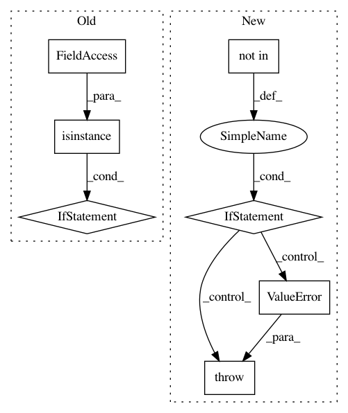

73c40d0d9ab37df1be31f06630e3371eed26a1a8,dipy/io/stateful_tractogram.py,StatefulTractogram,__init__,#StatefulTractogram#Any#Any#Any#Any#Any#Any#,52
Before Change
if origin_at_corner in Origin:
origin_at_corner = origin_at_corner.value
if not isinstance(origin_at_corner, bool):
raise TypeError("origin_at_corner MUST be a boolean or from "
"Origin enum, e.g Origin.NIFTI")
self._origin_at_corner = origin_at_corner
logger.debug(self)
@staticmethod
After Change
raise ValueError("Space MUST be from Space enum, e.g Space.VOX")
self._space = space
if origin not in Origin:
raise ValueError("Origin MUST be from Origin enum, e.g Origin.NIFTI")
self._origin = origin
logger.debug(self)
@staticmethod
In pattern: SUPERPATTERN
Frequency: 3
Non-data size: 7
Instances
Project Name: nipy/dipy
Commit Name: 73c40d0d9ab37df1be31f06630e3371eed26a1a8
Time: 2019-12-19
Author: francois.m.rheault@usherbrooke
File Name: dipy/io/stateful_tractogram.py
Class Name: StatefulTractogram
Method Name: __init__
Project Name: automl/auto-sklearn
Commit Name: 2ff4087343924e1cb293afa9f7b7bbe700f58007
Time: 2017-04-05
Author: feurerm@informatik.uni-freiburg.de
File Name: autosklearn/data/xy_data_manager.py
Class Name: XYDataManager
Method Name: __init__
Project Name: deepmind/sonnet
Commit Name: dc09af160f9f04c13fd0764b2712176b83538182
Time: 2017-11-09
Author: noreply@google.com
File Name: sonnet/python/modules/conv.py
Class Name: SeparableConv2D
Method Name: __init__